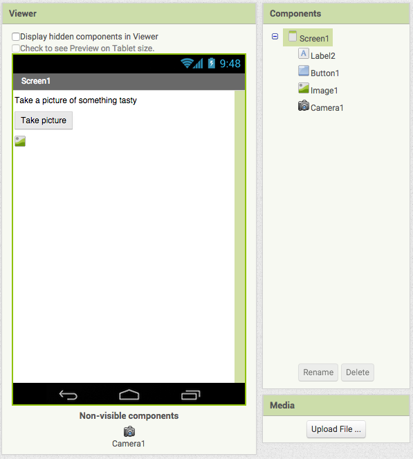
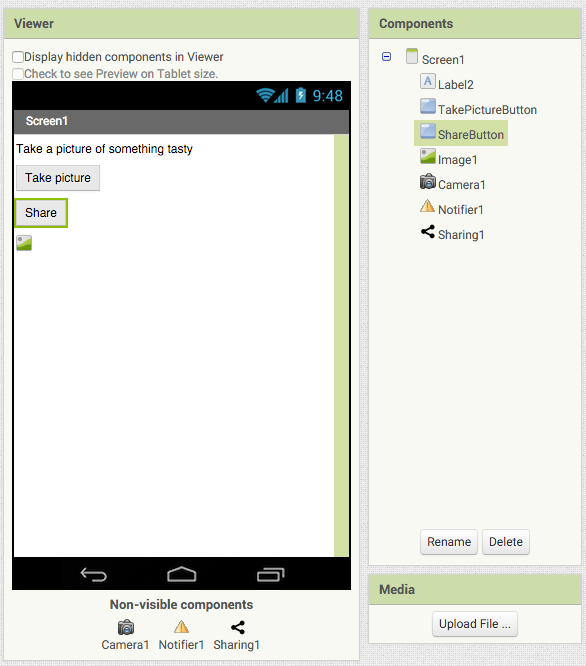

Camera¶
Create a new project in App Inventor, and name it "Camera". To start, drag and drop components in the Designer to replicate the screen below:
Now watch the following video to understand the behaviors that we are going to add to this program:
It can be useful to think of a program as the script for a stage play.
In this case, the actors are Camera, Button, and Image. Just
as in a real script, each actor has a role to play, and must respond
appropriately to another actor's actions. You, as the
writer/director/set designer of the play, want to make sure that:
- When the
Buttonis clicked, it calls forCamerato take a picture. - After the
Cameratakes the picture, it calls for theImageto display that picture.
Exercise
Use the Blocks interface to create behavior shown in the video above.
set Image1.Picture block.Run your app again to verify that it works as expected.
Exercise
After the Camera takes a picture, you get a variable called image, which is the path (location) of the image on your phone. Add a Notifier component, and make it show the location of the image after a picture is taken.
Now when you run your app, you'll see some text that looks something
like this:
file:///storage/emulated/0/Pictures/app_inventor_1442323449391.jpg.
If you have a File Manager app on your phone, you can go into the
Pictures directory to see the image file.
Taking a picture for yourself is nice, but wouldn't it be cool to share your pictures with friends? Let's add a Share button! Arrange the components in the Block interface so they look like this:
Now go into the Blocks interface and add a ShareButton.Click block.
Inside of that, add a Sharing1.ShareFile block. The
Sharing1.ShareFile block has one slot, representing the file that
you wish to share. Try dragging the get image block into this slot.
Unfortunately, an angry red triangle will appear, indicating an error:
Why can't we put get image there? It's because image is a
variable that is only available to the Camera1.Picture block, so it
cannot be used in other blocks! To solve this problem, we must use a
global variable:
Note that we used the same name, "image", for our global variable as our
local variable. This is not a problem for App Inventor, because get
blocks that reference global variables always have the word "global" in
their names. However, even if they store the same value, there is no requirement that global variables need to have the same name as local variables.
Exercise
Change the name of the global variable from "image" to "imageFile".
Run your app again. If you have other applications that are capable of transferring files, such as Facebook, Gmail, or Dropbox, you should be able to send your picture to them after clicking on the Share button.
In general, global variables are more work to deal with than local
variables, but you should use a global variable (i.e. the
initialize global block) whenever you need to access a variable in
more than one block. You'll see more global variables in other parts of
this tutorial.
Tip
Inside MIT AI2 Companion (running on your phone), the app automatically refreshes when you make changes in App Inventor (in your browser). However, you sometimes want to refresh the state of your app without making any changes. The easiest way to do this is to go to the Designer interface, select any component, and toggle one of the checkboxes in the Properties sidebar. For example, in the Camera project, you could select TakePictureButton, click its Enabled checkbox, then click the checkbox again.
Your program actually has a small bug right now. Refresh the app on the phone (that is, restore it to the state where no picture is showing), and press the Share button. What happens?
Exercise
The Sharing1.ShareFile block can't do its work because the global variable imageFile doesn't have a reasonable value. To see what value imageFile has before you take a picture, put a Notifier1.ShowAlert[get global imageFile]] block inside of ShareButton.Click.
So, imageFile gets set to the number 0 by default, but it
doesn't have to be that way. You'll notice that the
initialize global file block has an empty slot, so you can set the
value yourself so that you know for certain what it is.
Exercise
Initialize global variable imageFile with an empty Text block (one that has no value). Also add a block to ShareButton.Click that prevents sharing from happening if the value of imageFile is empty text.
≠ block, but if you drag the = block out you can use its dropdown to change it to an ≠ block.Run your app now to verify that no error message appears when you press the Share button before taking a picture.
OK, that works, but is it the best solution to the problem? Why should we let the user click the button at all if a picture hasn't been taken yet?
Exercise
Disable ShareButton by unchecking its Enabled checkbox in the Properties sidebar of the Designer interface. Then add another block to Camera1.AfterPicture that enables it.
true block in the Logic group of the Blocks sidebar.Hooray, now the Share button can't be clicked until after a picture has
been taken! Now the if block inside of ShareButton.Click isn't
even necessary anymore—you can safely get rid of it (but don't delete
the blocks inside of it).
In this chapter of the tutorial, you learned about the Camera widget
and the concept of global variables. You also hopefully started to get a
sense of the process of programming. Roughly speaking, it goes something
like this:
- You get something to work
- You realize there's a problem with how it works
- You fix the problem
- You realize it could work a little better
- Go back to step 1
This process repeats, over and over, for each feature in a program. Then you have to do it again when it's time to come out with a new version. As of this writing, the Chrome browser, which you are probably using, is on its 45th version (not even counting all the minor versions in between)! It's very rare for a non-trivial program to ever be "finished"—there is almost always something that can be improved. That may seem discouraging at first, but now you can understand why programmers tend to have good job security ;-)
Next, let's do a little bit of math.